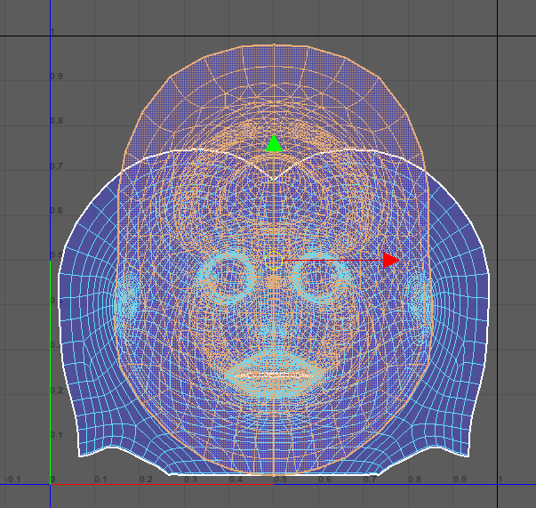
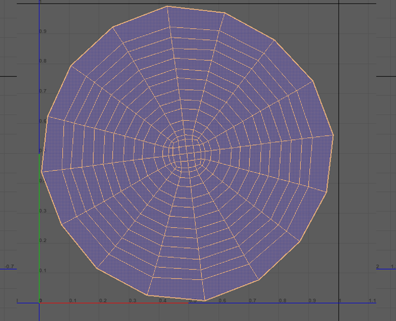
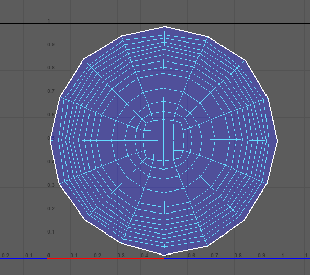

UV mapping
UV mapping is the process of translating a 3D mesh with all its sculpted details into 2D information so that a 2D texture can be wrapped around the low poly mesh.
The U and V are the horizontal and vertical axes of the 2D space, as X, Y and Z are already being used in the 3D space.
Take into consideration the following:
-
Split the maps according to the materials and mind that if you will create Blendshapes, the Editor will split the mouth from the head.
-
The UV maps must be in the 0-1 range of the UV space and they can be overlaid if it’s one single mesh, but keep in mind that they need to have separate materials (blinn or phong).
Ex: The mouth interior, teeth, tongue, gum should have separate materials from the head one. At import, the Animaze Editor will detect the materials and will split the mesh into two separate ones, one for the head and one for the mouth interior.

Tips
Try to allocate more space in the mapping, in order to use as much pixels as possible from the texture.
 
Before After
The same principle can be applied to the face, and other situations, this way it will be more detailed. You should think about your priorities in UV depending on the areas of interest (face of the avatar).
To compensate for the fact that the face and body are on the same UV map, we increased the size of the head in the mapping space in relation to all the other elements.
Let’s recap:
-
separate shells/elements (non-connected surfaces) are permitted; open surface is permitted (this way more materials can be used when having sub-components of the initial mesh)
-
for a sense of scale, the height of the avatar should be 1 unit in the metric system.
-
no overlapping materials – make sure that none of the textures overlap in UV space <<< the subsurface scatter, skin dot and translucency maps can be affected by artifacts if overlaid
-
the only way to have them overlaid is when a single mesh contains different materials, in which case the Animaze system will break the mesh into two separate ones